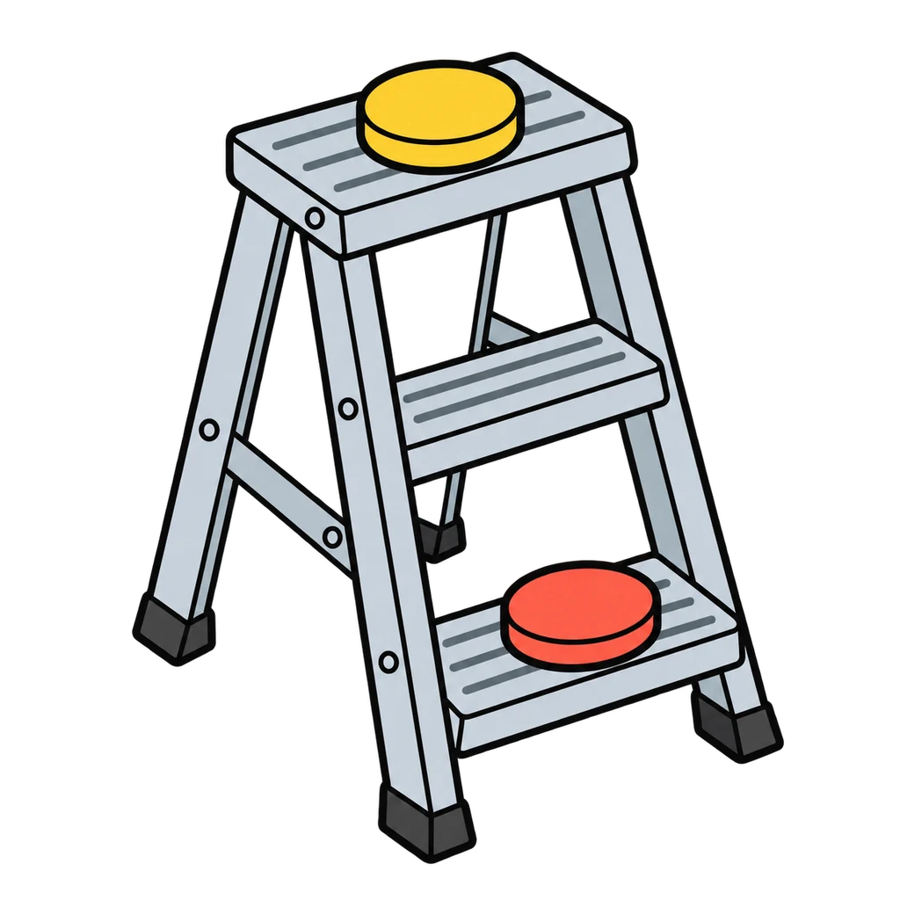
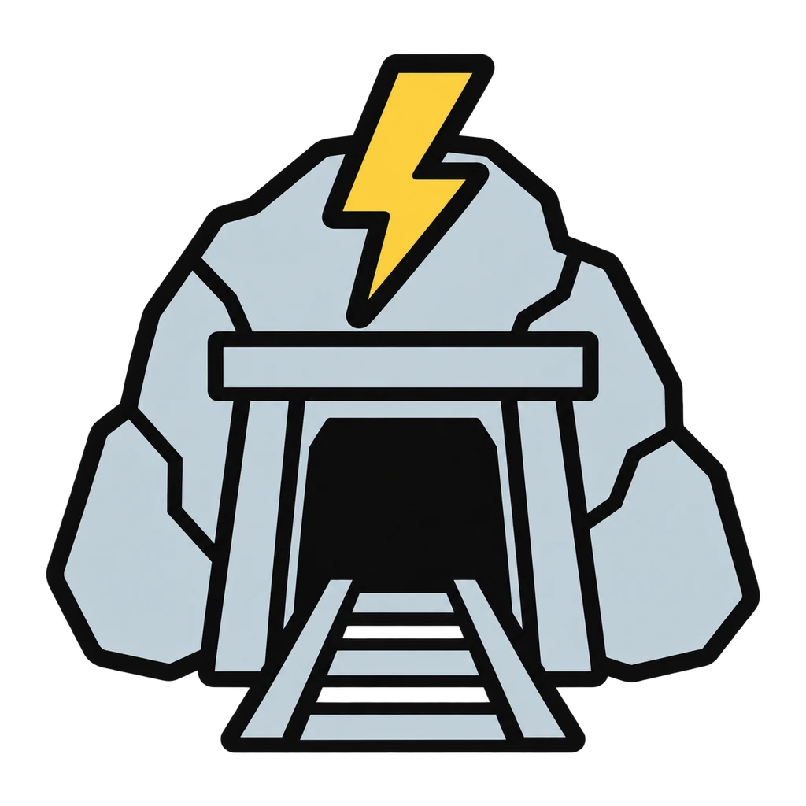
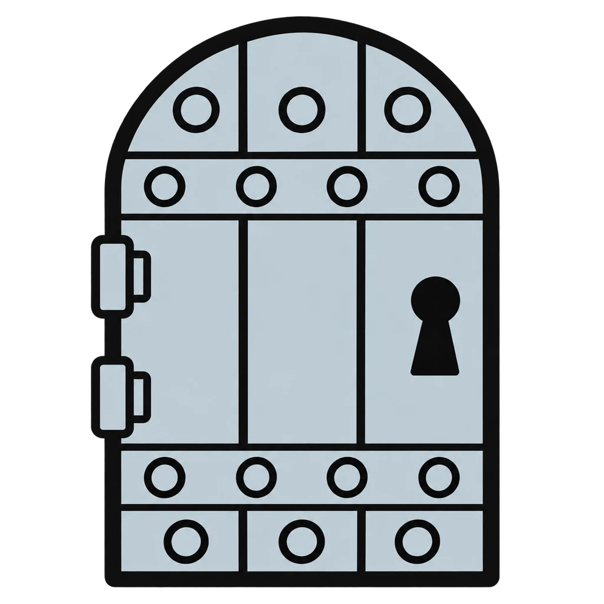
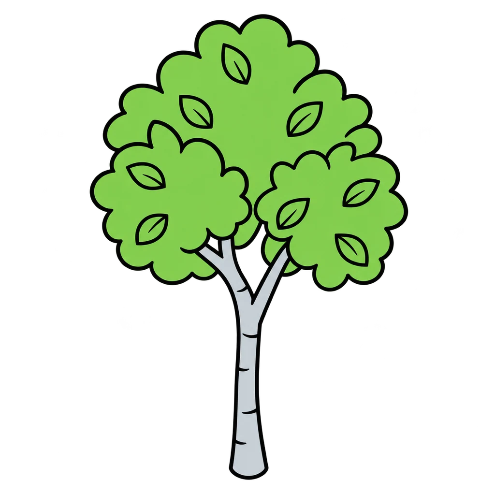
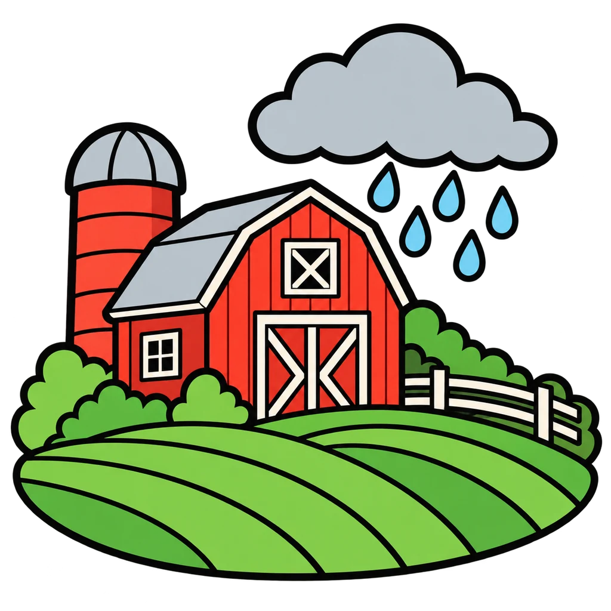
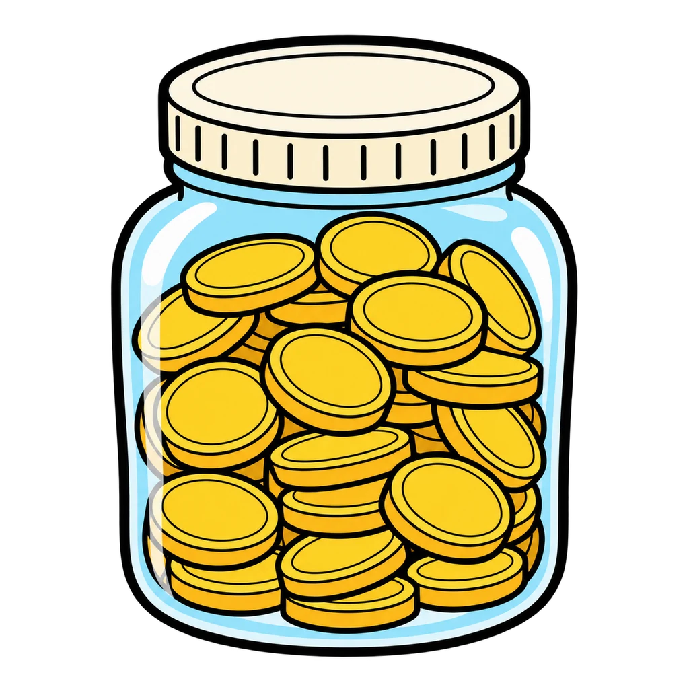
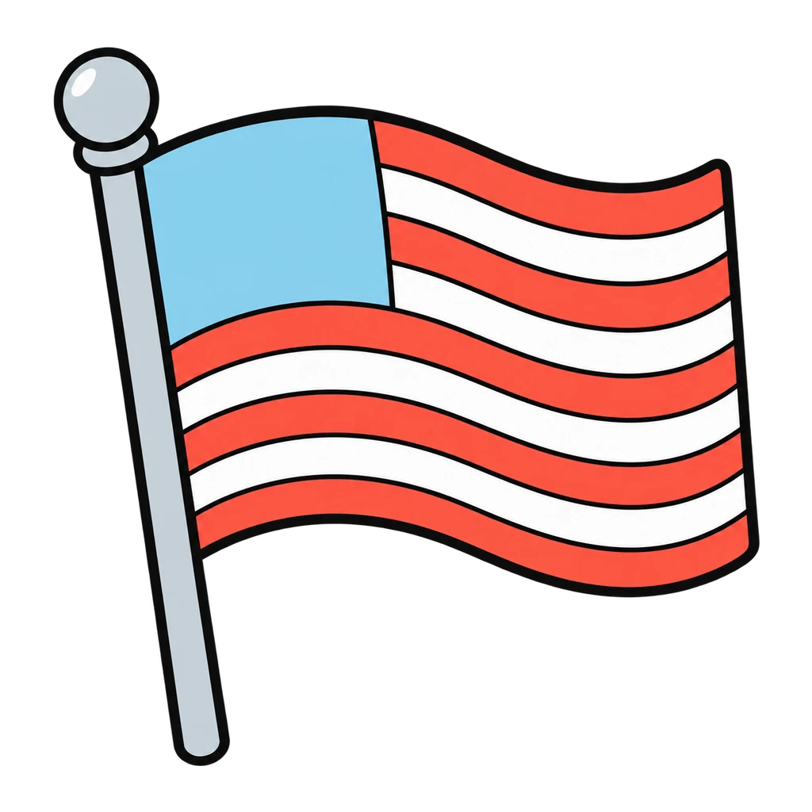
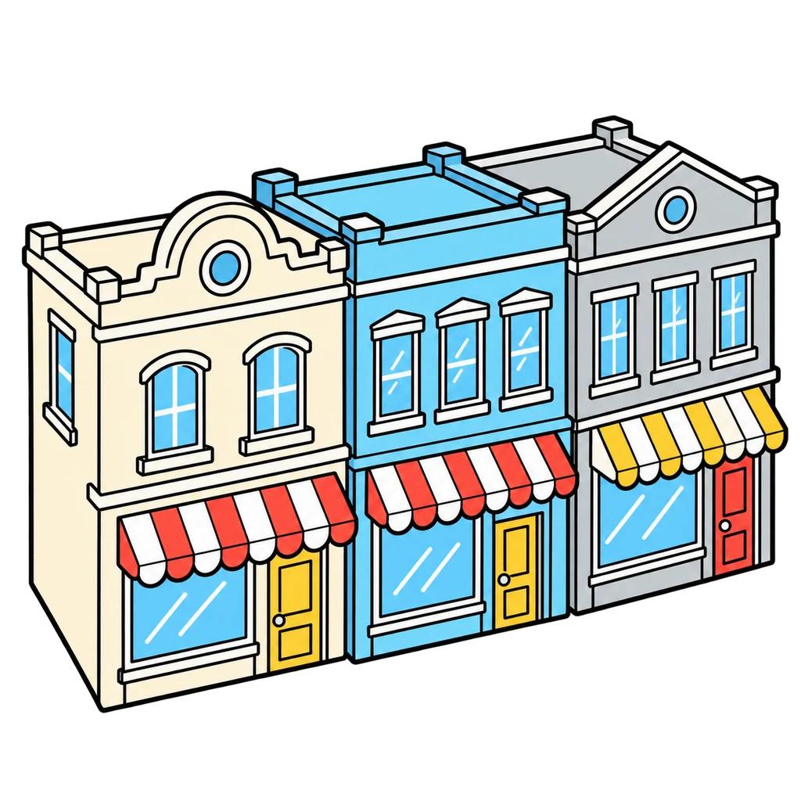
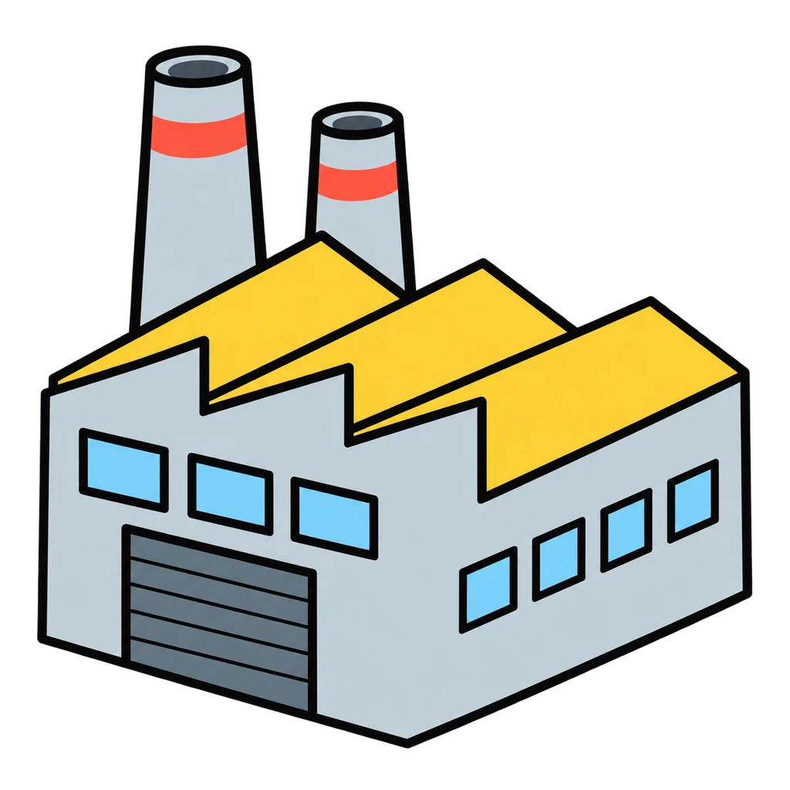

Reviews Lesson 2.14, Lesson 2.19. Reviews Lesson 2.14 Day 1 (the Venture Risk Cards sort and the risk ladder from slide 4; Round 1) and Lesson 2.19 Day 1 (the reveal table and the rest of the map; Round 2). Do not use Round 2 before Lesson 2.19; the 'what it really is' column is the reveal, and the cards say nobody learns it until Day 9. Round 1 works any day of the Investor Challenge as a warm-up before the trading window. Round 2 is the review before the Unit 2 Test, and it also works in Unit 7 when the same instruments come back. Settings: grade 6 plays the five-card sort from the lesson (HNYP, SEAL, WLLW, MDOW, SPRK) in Round 1; the Willowbrook and Meadowgold rungs accept either order, as the teacher key does.

Risk Ladder
Tap the seven venture cards onto the ladder from safest at the bottom to riskiest at the top, then the seven rungs from jar to new company stock. Then a venture card appears, and you tap what it really is.
How to play
- Higher up the ladder, more it can grow, more it can fall.








Done
The ones to study:
Worth knowing by heart:
- Handout 02.14 Venture Risk Cards: the seven cards and the risk word for each
- The risk ladder on the Investor Journal cover
- Handout 02.19 Investor Report Template Part 6: the reveal table and the word bank
- Saving keeps your money safe. Investing puts it to work, and work can go wrong.